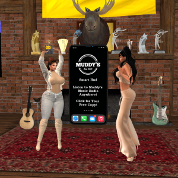
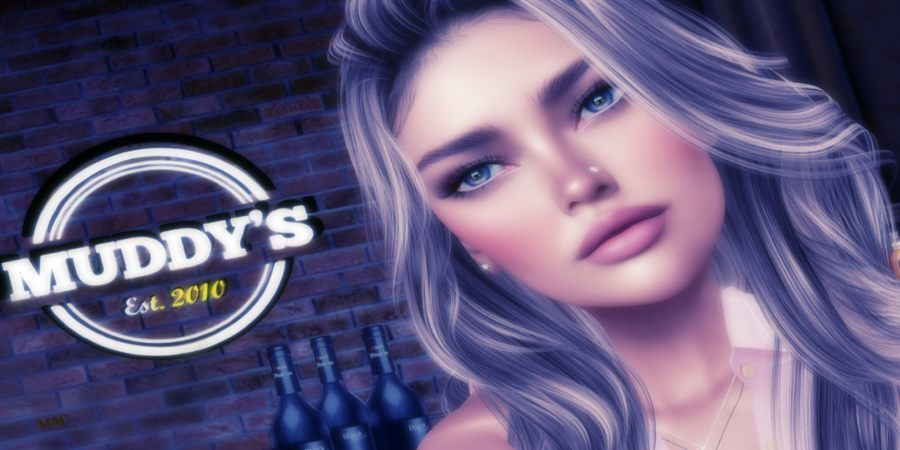
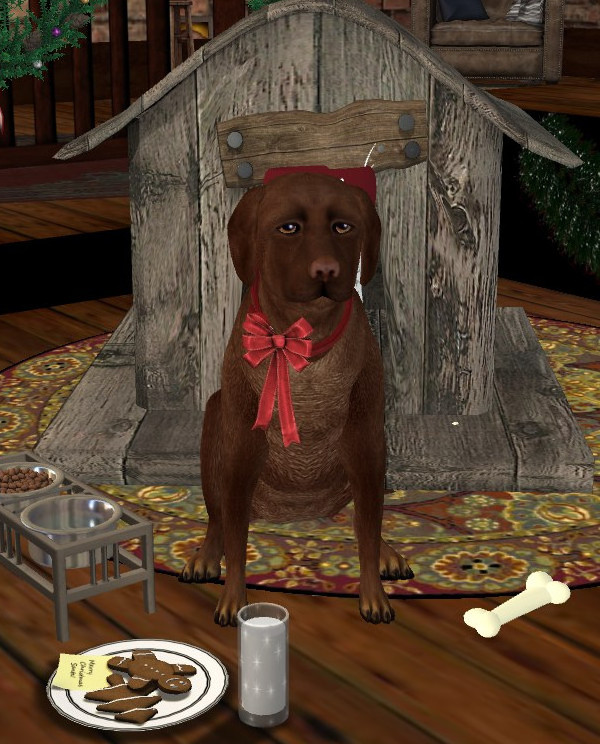

Oct 29 – 31
Halloween Block Party
Three nights of trick-or-treat, costumes and spooky sets from our DJs. Come dressed up.
Live in Second Life · 24 / 7 / 365
Since 2010, Muddy's Music Cafe has been Second Life's home for hand-picked DJs, friendly hosts, and the best in soft rock to pop — 70s to today. The music never stops.
Since 2015
Muddy's Radio started as a way for regulars to hear the sounds of the club while building or relaxing in their own homes. Streaming 24 hours a day, 7 days a week, 365 days a year, it's now popular in its own right.

Grab the free Muddy's Smart HUD at the club and take the radio with you anywhere in Second Life. (Media must be enabled.)
What's on
Parties, contests, roadshows and more. Tap a poster for the full view.
Three nights of trick-or-treat, costumes and spooky sets from our DJs. Come dressed up.
Dress to distress, pose to impress. Prizes of L$5,000, L$2,500 and L$1,000. Submit to our Flickr group. Original SL photography only, no AI.
Submit on Flickr →We're the official sponsor of Premier Wrestling's Full Circle. Everyone at the roadshow gets a free Premier Wrestling T-shirt and a chance to win a free ticket.
Teleport to the roadshow →BK and Paul sit down with owner Bridget Hammill to talk about Muddy's, the music, and 16 years on the grid.
Watch on YouTube →Muddy's on the road
Muddy's hits the road with guest sets at venues across the grid. Next stop: Cloud Nine, with DJ John and host Amfie streaming live on Sunday, October 25th, 1:45 – 4:00 PM SLT.

Our story
Founded in 2010, Muddy's has grown into one of the most popular and loved music venues in Second Life. Under the careful stewardship of owner Bridget Hammill, the club has gone from strength to strength, winning every major award along the way.
The friendly atmosphere, our hand-picked DJs and hosts, and a quietly efficient staff keep the music going around the clock. Here's to the next ten years and beyond.
From Muddy and me, thank you. — Beth

Meet the boss
The club's namesake and resident good boy. You'll usually find him by his doghouse, keeping an eye on the dance floor. Give him a pat when you visit.
Giving back
Muddy's is proud to be the official radio station of the American Cancer Society of Second Life, supporting Relay For Life and Strides. Together we celebrate survivors, remember loved ones, and keep fighting for a cure.
Now hiring
You keep all the tips.
Contact Bridget Hammill in Second Life for more information.
Every DJ and host at Muddy's is hand-picked. They're the reason regulars keep coming back, and the reason first-timers become regulars.
Business partners
Our radio is going grid-wide. Partners get free or discounted advertising, chosen because they're excellent at what they do and have the track record to prove it.
Want to reach Muddy's listeners without costing you a penny?
Contact Bridget Hammill in SL